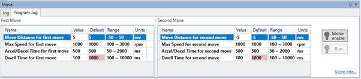
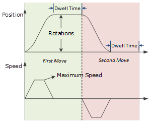
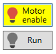
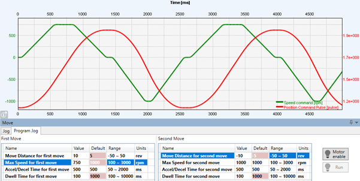

Consider the range of motion of the machine when the Program Jog function is used.
The Program Jog function allows the operation of the drive and motor to be tested without running a program on the controller. Typically, this is used during commissioning and tuning.
The program jog motion is a sequence of two profiled moves of a specific distance with a programmable dwell time between moves. Each move has an independent move distance, acceleration, deceleration and speed. Both are profiled using a trapezoidal velocity profile.
|
|
Consider the range of motion of the machine when the Program Jog function is used. |
Always confirm the following before you perform the motion tests.
• The main circuit power supply must be ON.
• There should be no active alarms.
• The drive must not be in Safe State (STO function should allow the drive to be enabled).
• The servo must be OFF.
• The jogging speed must be set considering the operating range of the machine.
The program jog move panel shows the parameters that control the motion

The program jog is a sequence of 2 moves performed repeatedly. Each move has a relative distance, parameters controlling the profile and a dwell time, a delay before the next move is started.

By changing the direction of the first move the sequence can be modified to perform either a round trip is a positive direction or a negative direction.

The parameters controlling the program jog are:
To initiate motion, first the drive must be enabled by clicking the ‘Motor enable’ button. This will enable the ‘Run’ button.

Clicking the ‘Run’ button will start the motion. The sequence will run repeatedly until stopped by either clicking the ‘Run’ button or the ‘Motor enable’ – during motion clicking either will disable the axis.
The graph below shows an example of program jog motion.

When the drive is enabled via the ‘Motor enable’ button, the drive switches to a local control mode. While in this mode the position change is not sent to the controller. The controller values of MPOS and DPOS will not change during a jog. When the drive is disabled, the update of MPOS and DPOS will continue.